Lab 02 - Selecting Groups Within Data
This lab offers practice with logical statements used to create groups from your data.
I have provided you with a LAB-02 RMD template:

Getting Started
Functions Used in this Lab
You will use the following functions for this lab:
logical operators ( ==, >, <, ! )
sum() # count TRUEs in logical vectors
mean() # proportion of TRUEs in logical vectors
compound statements with & (AND) and | (OR) operators Data
This lab uses city tax parcel data, and open dataset released by the municipal government of Syracuse, NY.
- Each house, business, park or empty lot in the city sits on a parcel of land, and the tax rate for that parcel is determined by the city.
- All of the characteristics of each parcel is stored in a central database, along with information about the land use classifications, owners, and whether the property is up-to-date on taxes and water bills.
- Each row represents one tax parcel, and all tax parcels in the city are recorded in the dataset.

We will use the downtown area for this lab:
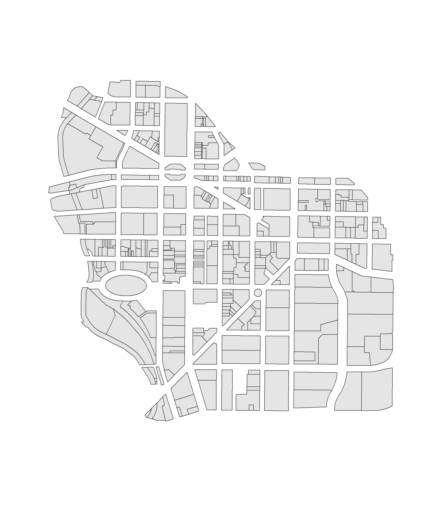
Load the Downtown Syracuse Parcel Map
You will need the following packages for this lab:
NOTE: do not include include install package commands in your RMD chunks. Trying to install packages while knitting can cause errors.
Load the map file:
URL <- "https://raw.githubusercontent.com/DS4PS/Data-Science-Class/master/DATA/downtown-syr.geojson"
downtown <- geojson_read( URL, what="sp" )
plot( downtown, border="gray50", col="gray80" )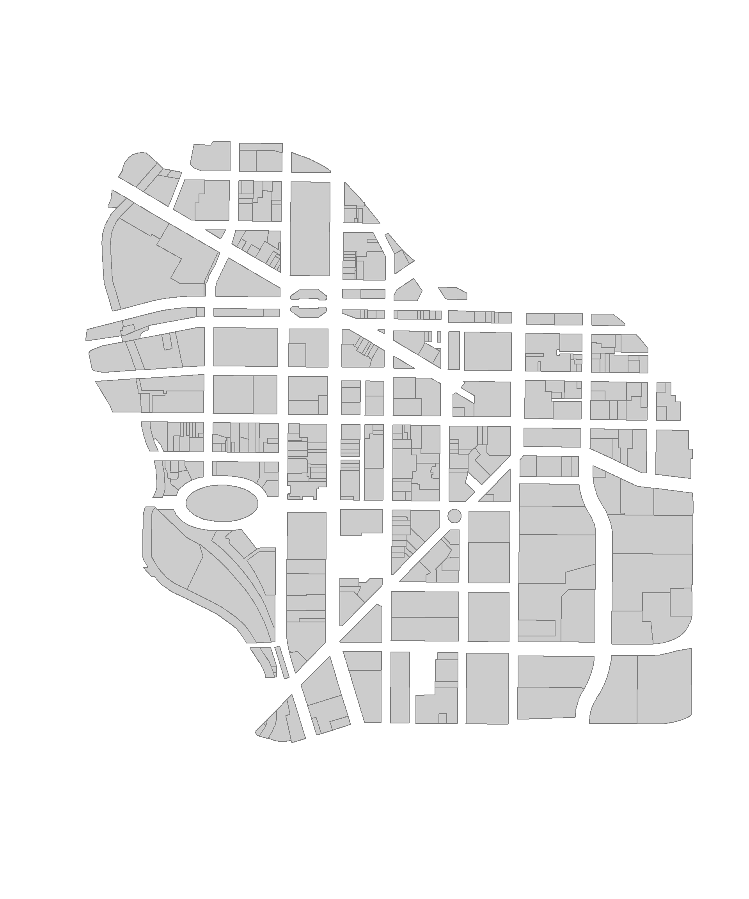
Data Dictionary
Note, the downtown file contains a subset of the fields.
| tax_id | stnum | stname | zip |
|---|---|---|---|
| 31150010100000100080010000 | 484-98 | SALINA ST S & ONONDAGA ST | 13078 |
| 31150010300000150050000000 | 311-17 | WATER ST E TO ERIE BLVD E | 13202 |
| 31150010300000160010000000 | 257 | WATER ST E & MONTGOMERY S | 13202 |
| 31150010300000160020000000 | 251 | WATER ST E TO ERIE BLVD E | 14534 |
| 31150010300000160030000000 | 243-49 | WATER ST E TO ERIE BLVD E | 13066 |
| 31150010300000160040000000 | 239 | WATER ST E TO ERIE BLVD E | 13088 |
| 31150010300000160050000000 | 235 | WATER ST E TO ERIE BLVD E | 13202 |
| 31150010300000160060000000 | 207-33 | WATER ST E TO ERIE BLVD E | 13202 |
| 31150010300000160070000000 | 203 | WATER ST E & WARREN ST S | 13202 |
| 31150010400000170010000000 | 135 | WATER ST E & WARREN ST S | 13088 |
| frontfeet | depth | sqft | acres | nhood | ward | censustract |
|---|---|---|---|---|---|---|
| 143.7 | 273.2 | 57935 | 1.33 | Downtown | 09 | 32 |
| 79.09 | 78.71 | 6209 | 0.1425 | Downtown | 15 | 32 |
| 41 | 60 | 2475 | 0.05681 | Downtown | 09 | 32 |
| 40.89 | 60 | 2467 | 0.05662 | Downtown | 09 | 32 |
| 41.63 | 60 | 2499 | 0.05738 | Downtown | 09 | 32 |
| 20.81 | 60 | 1244 | 0.02856 | Downtown | 09 | 32 |
| 20.81 | 60 | 1248 | 0.02865 | Downtown | 09 | 32 |
| 136.9 | 60 | 8169 | 0.1875 | Downtown | 09 | 32 |
| 28.26 | 59 | 1694 | 0.03889 | Downtown | 09 | 32 |
| 57.3 | 59.44 | 3390 | 0.07783 | Downtown | 09 | 32 |
| landuse | yearbuilt | units | vacantbuild | watersvc | assessedland |
|---|---|---|---|---|---|
| Parking | 0 | 0 | NA | NA | 650000 |
| Commercial | 1950 | 0 | N | A | 61600 |
| Parks | 0 | 0 | N | NA | 24600 |
| Commercial | 1900 | 0 | N | A | 24000 |
| Commercial | 1950 | 0 | N | A | 24600 |
| Commercial | 1950 | 0 | N | A | 24000 |
| Commercial | 1980 | 0 | N | A | 24000 |
| Commercial | 1980 | 0 | N | A | 104400 |
| Commercial | 1940 | 0 | N | A | 33000 |
| Commercial | 1887 | 0 | N | A | 100900 |
| assessedval | citytaxable | starc | taxtrust | amtdelinqt | taxyrsdelinqt |
|---|---|---|---|---|---|
| 650000 | 650000 | 650000 | NA | 0 | 0 |
| 112000 | 0 | 0 | NA | 0 | 0 |
| 24600 | 0 | 0 | NA | 0 | 0 |
| 211000 | 211000 | 211000 | NA | 0 | 0 |
| 384000 | 384000 | 384000 | NA | 0 | 0 |
| 160000 | 160000 | 160000 | NA | 0 | 0 |
| 166000 | 166000 | 166000 | NA | 0 | 0 |
| 225000 | 225000 | 225000 | NA | 0 | 0 |
| 396000 | 205000 | 205000 | NA | 0 | 0 |
| 3e+05 | 3e+05 | 3e+05 | NA | 0 | 0 |
| overduewater | totint |
|---|---|
| 0 | 0 |
| 0 | 0 |
| 0 | 0 |
| 0 | 0 |
| 0 | 0 |
| 45.64 | 0 |
| 2.13 | 0 |
| 2.41 | 0 |
| 323.9 | 0 |
| 0 | 0 |
Lab Instructions
Answer the following questions using the Syracuse downtown parcels dataset and the functions listed.
Your solution should include a written response to the question, as well as the code used to generate the result.
The images are included so that you can check whether your logical statements are correct.
Questions
1. Where are the majority of vacant lots located in the downtown? Produce a map of your results that matches the one shown here.
landuse variable 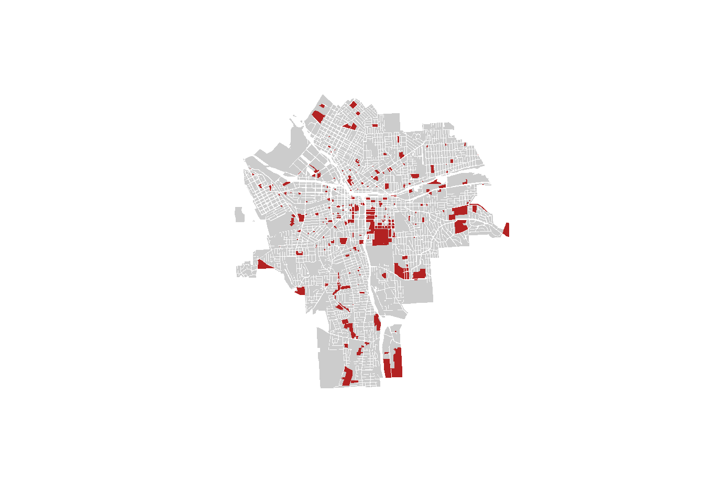
2. How many parking lots are in downtown Syracuse? Map your results.
sum() function and landuse variable
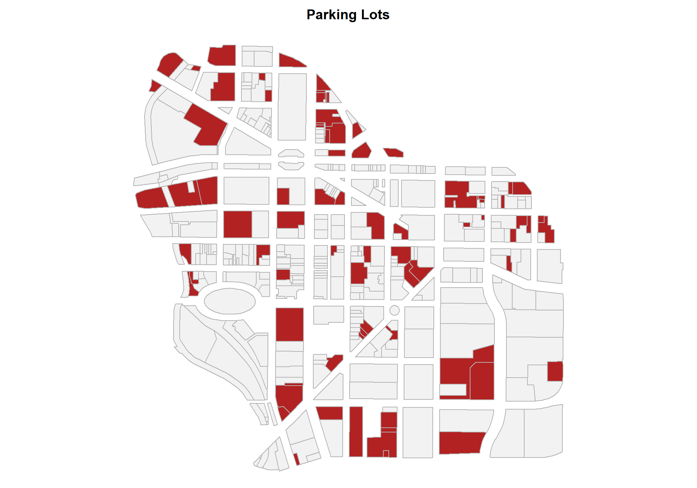
3. Where is new construction located in the city?
Calculate the number of buildings constructed since 1980.
yearbuilt variable 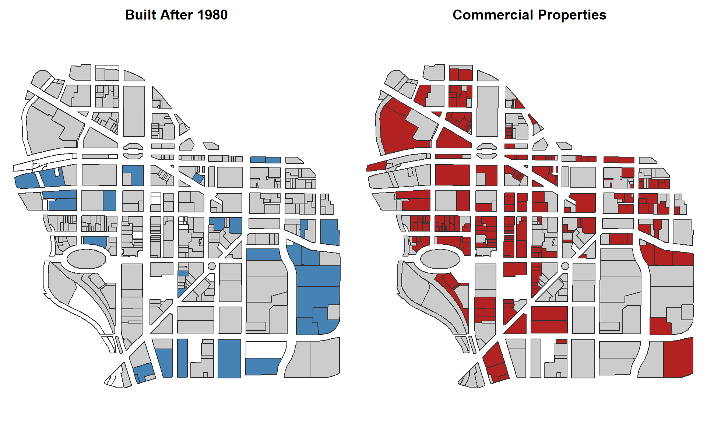
What proportion of commercial properties are built since 1980?
count commercial properties, and buildings constructed since 1980: landuse and yearbuilt variables
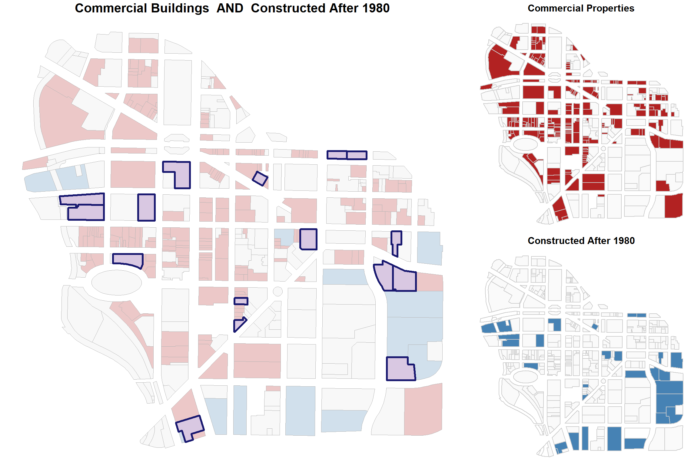
4. How many parcels have assessed values over $10 million? Map your results.
use the sum() function with assessedval variable;
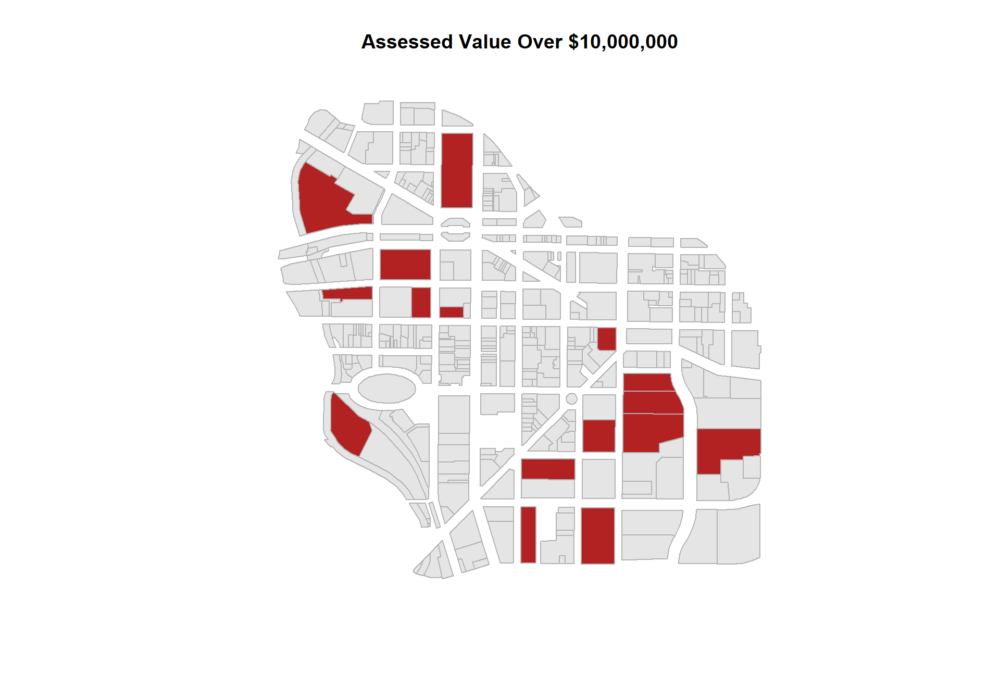
5. How many properties are delinquent on taxes? Map your results.
sum() with the amtdelinqt;
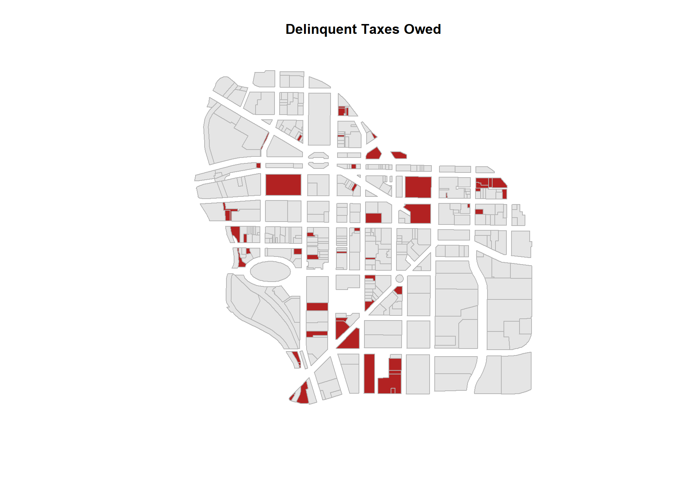
6. What proportion of parcels have delinquent tax payments owed?
mean() with the amtdelinqt variable
7. What proportion of commercial properties are delinquent on taxes? What proportion of delinquent tax bills are owed by commercial parcels?
mean() with amtdelinqt and landuse variables define your groups with compound statements first then calculate proportions 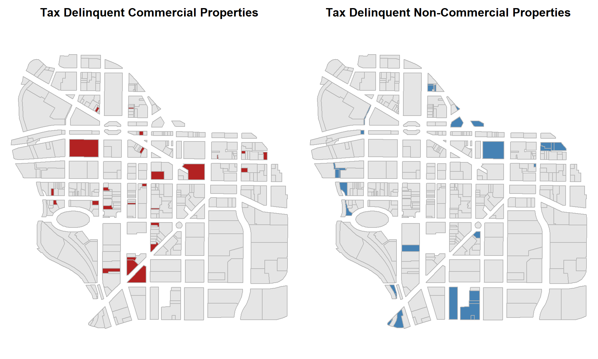
8. How many of each land use type are delinquent on taxes?
table() with amtdelinqt and landuse variables define delinquency first, then create a table with landuse and delinquency
Challenge Questions
Map all of the land valued at over $1 million per acre.
Map all of the land valued at less than $500,000 per acre.
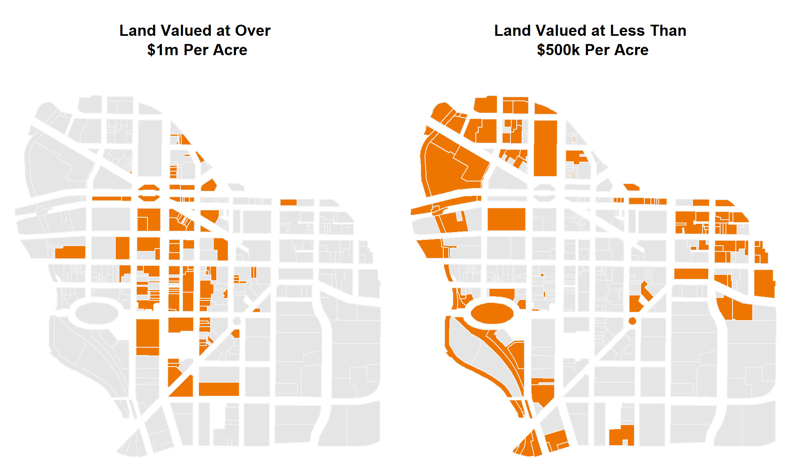
What is the total value of all of the commercial parcels in the city?
What is the total value of all of the non-commercial parcels in the city?
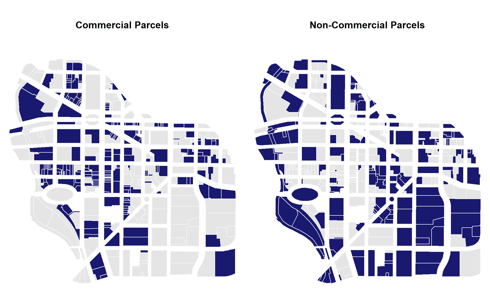
Submission Instructions
When you have completed your assignment, knit your RMD file to generate your rendered HTML file.
Login to Canvas at http://canvas.asu.edu and navigate to the assignments tab in the course repository. Upload your HTML and RMD files to the appropriate lab submission link.
Platforms like BlackBoard and Canvas sometimes disallow you from submitting HTML files when there is embedded computer code. If this happens create a zipped folder with both the RMD and HTML files.
Remember to:
- name your files according to the convention: Lab-##-LastName.Rmd
- show your solution, include your code.
- do not print excessive output (like a full data set).
- follow appropriate style guidelines (spaces between arguments, etc.).
See Google’s R Style Guide for examples.
Markdown Trouble?
If you are having problems with your RMD file, visit the RMD File Styles and Knitting Tips manual.
Notes on Knitting
Note that when you knit a file, it starts from a blank slate. You might have packages loaded or datasets active on your local machine, so you can run code chunks fine. But when you knit you might get errors that functions cannot be located or datasets don’t exist. Be sure that you have included chunks to load these in your RMD file.
Your RMD file will not knit if you have errors in your code. If you get stuck on a question, just add eval=F to the code chunk and it will be ignored when you knit your file. That way I can give you credit for attempting the question and provide guidance on fixing the problem.
Helpful Hints
Some things to keep in mind as you get started:
Steps in Identifying Groups
For this lab you will construct a group by translating some management question from plain English into a logical statement, then show a map of the newly constructed group by adapting the code provided:
How many parcels are larger than one acre?
these <- downtown$acres > 1 # the group I am defining
sum( these ) # count of parcels in our defined group## [1] 59## [1] 0.151671To show the location of this group on a map:
these <- downtown$acres > 1 # define your group
group.colors <- ifelse( these, "firebrick", "gray80" ) # don't change this
plot( downtown, border="gray70", col=group.colors ) # don't change this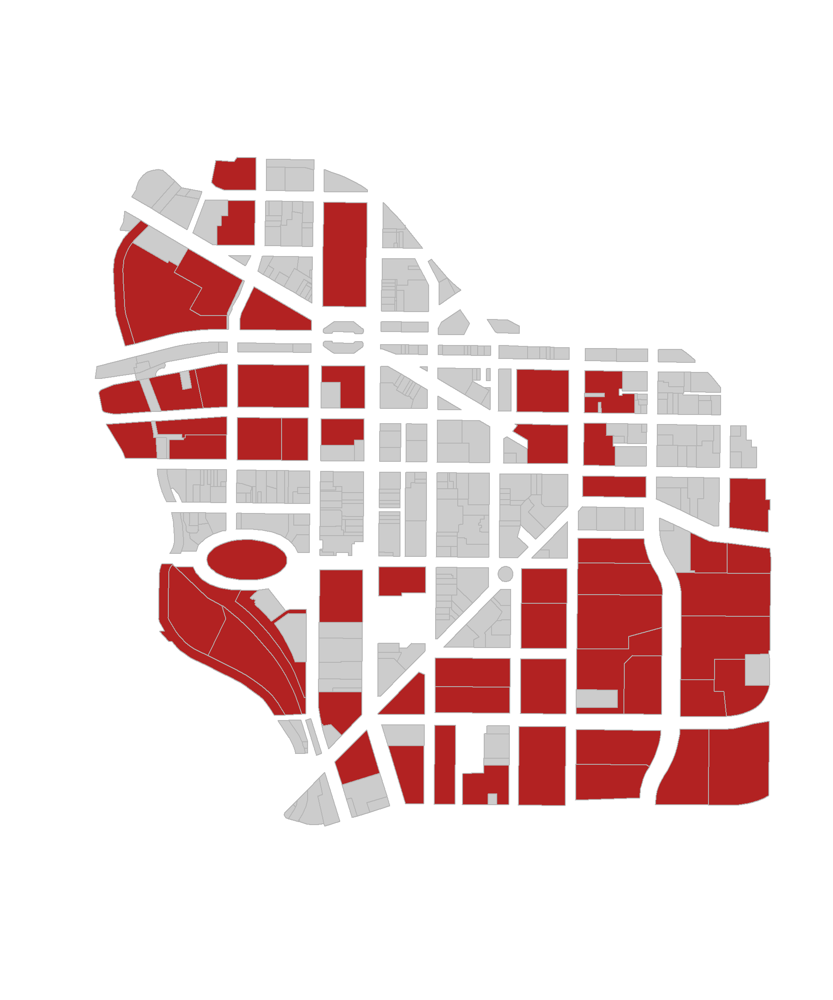
What proportion of downtown parcels are occupied by commercial buildings?
## [1] 0.5372751Plot commercial parcels on a map:
these <- downtown$landuse == "Commercial"
group.colors <- ifelse( these, "firebrick", "gray90" ) # don't change this
plot( downtown, border="gray70", col=group.colors ) # don't change this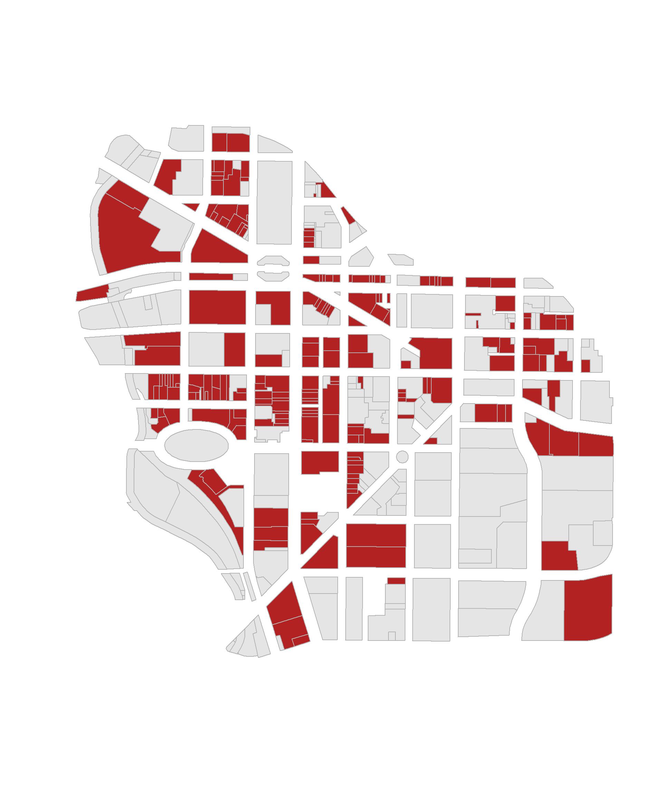
Identifying Unique Values
We will often define a group using criteria relevant to the management question. For example, we might want to look at all single family homes that are valued over $250,000 in a city. Or perhaps we want to identify all commercial properties that are delinquent on taxes. These are examples of compound logical statements that combine information from two or more variables (land use and value, or land use and tax status).
# single family homes worth more than $250,000
downtown$landuse == "Single Family" & downtown$assessedval > 250000We can find the current category levels defined within factors or character vectors using a table() or unique() function.
##
## Apartment Commercial Community Services Industrial
## 6 209 17 4
## Parking Parks Recreation Religious
## 78 8 5 6
## Schools Single Family Utilities Vacant Land
## 4 1 6 45## [1] "Parking" "Commercial" "Parks"
## [4] "Community Services" "Vacant Land" "Utilities"
## [7] "Apartment" "Recreation" "Schools"
## [10] "Religious" "Industrial" "Single Family"Note that the spelling has to be precise for the statement to work correctly.
## [1] 6## [1] 0Missing Values
When there are missing values (NAs) in a vector you need to tell mathematical functions like sum() and mean() to ignore them, otherwise they will return NA.
## [1] NA## [1] 7Any ideas why R would default to NA for mathematical functions?
Consider an example with a free museum that brings in a special exhibit. They don’t charge when you enter, but if you visit the special exhibit you have the option to make a donation to support the event. The computer logs all visitors, but it only enters values for those that visited the special exhibit.
x <- c( NA, NA, 20, NA, 0, 15, NA, 45, NA, NA, NA, NA, 10, 0, NA, NA )
# how many people visited the museum today?
length( x )## [1] 16## [1] 90## [1] 15# if we know that 200 people will visit the meseum this weekend,
# how much do we expect the special exhibit to raise?
#
# people visiting x average donation
200 * mean( x, na.rm=T )## [1] 3000Is this a correct estimate?
What average does this represent (who is in the denominator)?
x <- c( NA, NA, 20, NA, 0, 15, NA, 45, NA, NA, NA, NA, 10, 0, NA, NA )
# what was the average donation made to the special exhibit?
mean( x, na.rm=T )## [1] 15When you add na.rm=T to the function it will drop all cases with missing data.
Let’s look at the data again and think about the counts of people more precisely:
## [1] 16## [1] 6## [1] 0.375## [1] 5.625# average donation for ONLY THOSE that went to the exhibit
sum( x, na.rm=T ) / sum( x >= 0, na.rm=T )## [1] 15Our initial estimate was incorrect. We multiplied all museum visitors by the average donation of those that attended the exhibit, a subset of all visitors. We will greatly over-estimate the expected event revenue as a result.
# if we know that 200 people will visit the meseum this weekend,
# how much do we expect the special exhibit to raise?
#
# people visiting x average donation per person
200 * mean( x, na.rm=T )## [1] 3000To get an accurate estimate of the special event revenues we need to consider how many museum visitors will attend the exhibit:
# accurate estimate:
# people x those at exhibit x ave donation
200 * ( sum( x >= 0, na.rm=T ) / length( x ) ) * mean( x, na.rm=T )## [1] 1125# alternatively:
# number of visitors x ave donation per museum visitor
200 * ( sum( x, na.rm=T ) / length(x) )## [1] 1125Missing values serve a very important function in statistics, because they force the analyst to decide whether we can ignore them completely, or whether the need to be interpretted if we want the model to be accurate. So when you get this:
## [1] NAR is telling you to take a step back to determine how we should treat these values. We can interpret missing values as zero when we tabulate the total of donations:
## [1] 90But it is problematic when we are looking at proportions or averages in this context.
Missing values means something different in every context, so pay attention to them when they exist. I guarantee that you will make an error in an important calculation at least once in your career because you ignore missing values.
Compound Logical Statements
We often want to create a new group by combining existing groups:
public.goods <- downtown$landuse == "Parks" |
downtown$landuse == "Parking" |
downtown$landuse == "Vacant Land"
mean( public.goods ) # proportion of downtown## [1] 0.3367609The is a compound logical statement because there is more than one criteria used to define the group. Compound statements require the use of the OR operator | or the AND & operator. They can also combine criteria from multiple variables in the model.
For example, a brown-eyed girl would be written:
Logical statements are one of the most useful tools in data, but they are a little tricky at first. Consider the difference between the criteria FEMALE & BROWN EYES vs FEMALE | BROWN EYES.
In a world where eyes is either brown or green and gender is either male or female, these two criteria would return the following:
FEMALE & BROWN EYES
- female + brown eyes
- intersection of all females and all people with brown eyes
FEMALE | BROWN EYES
- female + brown eyes
- female + green eyes
- male + brown eyes
- all females in the dataset and all people with brown eyes
Note that in plain English we say “females AND people with brown eyes” when we are combining groups, using the OR operator to create a union of groups.
A good way to keep the logic straight is to add the term “ONLY” to the front of each plain English group descriptor. “ONLY females in the dataset AND ONLY people with brown eyes”.
Also pay attention to the order of operations when applying the NOT operator ! to logical statements. The operator flips each TRUE to a FALSE in a logical vector, and vice-versa each FALSE to TRUE. It creates a compliment set, which is anything not in the current group.
Consider these two cases:
! ( FEMALE & BROWN EYES )
- female + green eyes
- male + brown eyes
- male + green eyes
- the values of brown-eyed girls become FALSE, and everything else is TRUE or part of the new group
! FEMALE & BROWN EYES
- male + brown eyes
- first identify NOT females (all males in the data), then intersect that group with brown eyes
Note that the NOT operator is not equivalent to what some people might consider an OPPOSITE operation. The compliment group of brown-eyed girls is not green-eyed boys! That would be written:
! FEMALE & ! BROWN EYES
If you pay attention to the order of operations, just like mathematical operators, it will help you avoid making errors.
How to Submit
Use the following instructions to submit your assignment, which may vary depending on your course’s platform.
Knitting to HTML
When you have completed your assignment, click the “Knit” button to render your .RMD file into a .HTML report.
Special Instructions
Perform the following depending on your course’s platform:
- Canvas: Upload both your
.RMDand.HTMLfiles to the appropriate link - Blackboard or iCollege: Compress your
.RMDand.HTMLfiles in a.ZIPfile and upload to the appropriate link
.HTML files are preferred but not allowed by all platforms.
Before You Submit
Remember to ensure the following before submitting your assignment.
- Name your files using this format: Lab-##-LastName.rmd and Lab-##-LastName.html
- Show both the solution for your code and write out your answers in the body text
- Do not show excessive output; truncate your output, e.g. with function
head() - Follow appropriate styling conventions, e.g. spaces after commas, etc.
- Above all, ensure that your conventions are consistent
See Google’s R Style Guide for examples of common conventions.
Common Knitting Issues
.RMD files are knit into .HTML and other formats procedural, or line-by-line.
- An error in code when knitting will halt the process; error messages will tell you the specific line with the error
- Certain functions like
install.packages()orsetwd()are bound to cause errors in knitting - Altering a dataset or variable in one chunk will affect their use in all later chunks
- If an object is “not found”, make sure it was created or loaded with
library()in a previous chunk
If All Else Fails: If you cannot determine and fix the errors in a code chunk that’s preventing you from knitting your document, add eval = FALSE inside the brackets of {r} at the beginning of a chunk to ensure that R does not attempt to evaluate it, that is: {r eval = FALSE}. This will prevent an erroneous chunk of code from halting the knitting process.